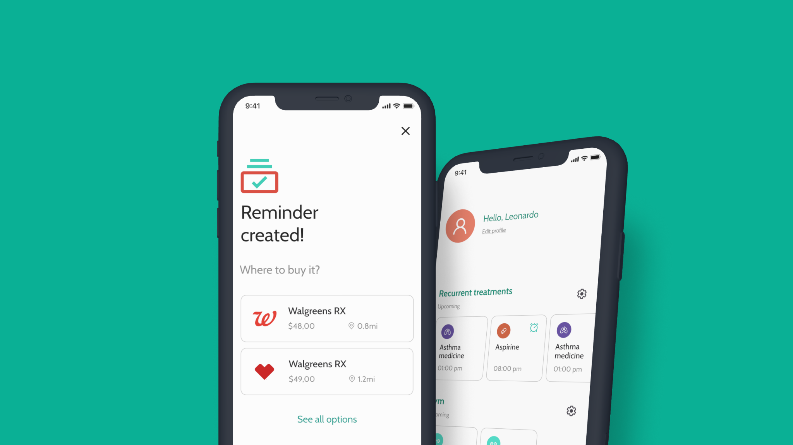
Mobile
Study case
In the Medtime project, I set out to create a mobile app that simplifies medication management. The goal was to make setting personalized alarms easy and offer convenient medication purchase suggestions. Focused on user-centric design, I aimed to help users like Paolo and Ana manage their medication routines effortlessly from their first use.
Our personas, Paolo and Ana, represented diverse user needs and expectations. As we embarked on designing the ideal mobile app, their insights and preferences guided us towards creating a truly user-centric experience that catered to the unique requirements of both tech-savvy professionals and caring caregivers alike.
Age: 18
Family: Lives with parents
Occupation: Unemployed
"Having to remember all the medicines to take is complicated!"
From a young age, Paolo has been battling various respiratory diseases, enduring long and challenging treatment regimens. Despite the hardships, like any young adult, he yearns to savor life's moments and relish in its joys.
I need a tool to help me remember the medicines I need to take
The other apps I have tried, are too complicated to set any reminder.
Age: 27
Family: Lives alone
Occupation: Gym trainer
"Having busy schedules that is constantly alternating is no fun"
As a dedicated Gym Trainer, I face the occasional complexities of my ever-changing schedule, which varies from week to week. Balancing my commitments can be quite challenging, especially when it comes to ensuring I take my essential supplements and pre-training regimen consistently.
I need a tool to easily have many schedules of medicine treatments, so I can switch between them
Using the current apps, I have to create new schedules every week.
User tests were conducted with Lo-Fi prototypes, gathering feedback from personas Alex and Sarah. Observing their interactions helped us identify usability issues and refine the design. With these insights, we'll now develop Hi-Fi prototypes to enhance the user experience.
Drag to view all
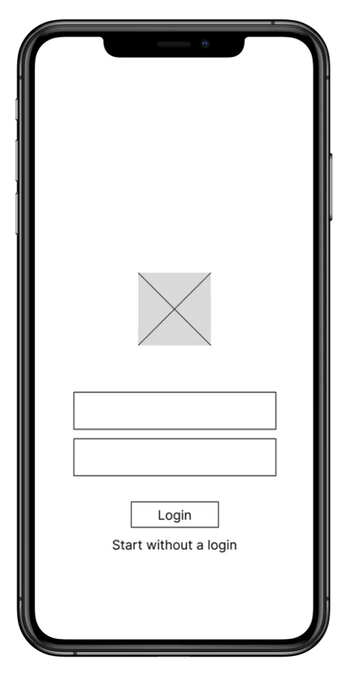
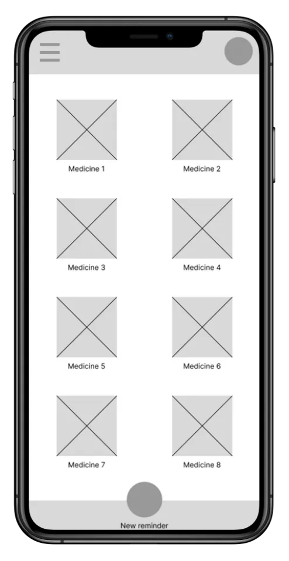
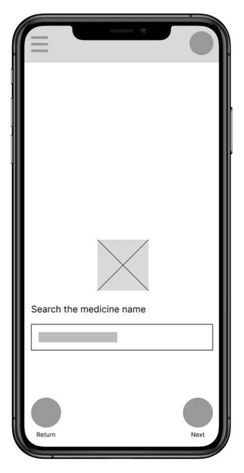
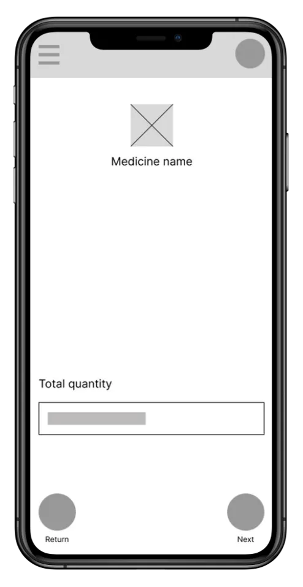
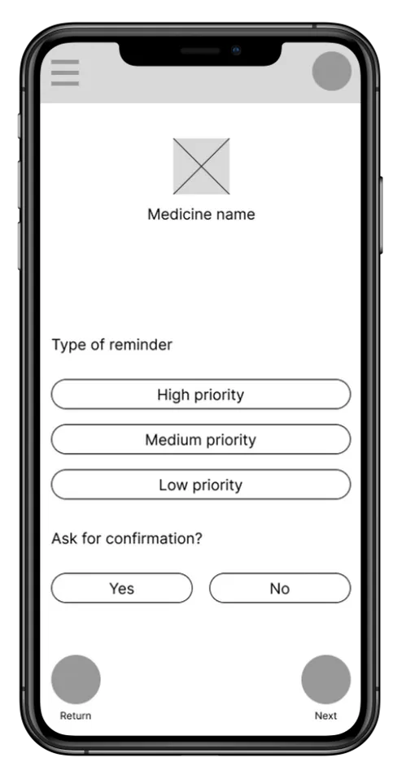
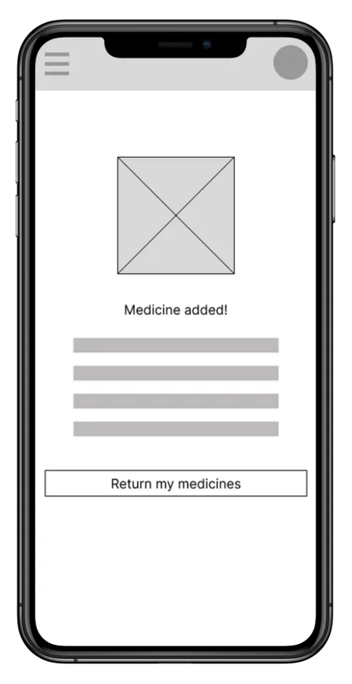
After the first tests, I carefully analyzed key improvements needed for the screens, identifying areas for refinement to enhance the user experience. Addressing these insights ensured that the next design iterations would result in a more intuitive and user-friendly interface, meeting and exceeding user expectations.
Some insights
Create a new section for recurrent/regular medicines, and create the possibility to add categories and personalized sections for medicines.
Some insights
Add a “Add More” under the time picker, and suggest patterns of usage, like “3 times per day”.
Some insights
Show at the end of the flow where the medicine is available
Some insights
Provide a way to switch between date picker layouts.
uilding on insights from user testing with Lo-Fi prototypes, we transformed the Medtime app by creating Hi-Fi prototypes. By addressing key pain points and streamlining the interface, the updated design offered a visually appealing and intuitive experience. The Hi-Fi prototypes featured improved navigation, personalized medication alarms, and enhanced pharmacy suggestions, ensuring seamless medication management for users like Paolo and Ana. These updates not only refined the app’s functionality but also elevated its visual appeal, delivering a truly user-centric experience.
Drag to view all
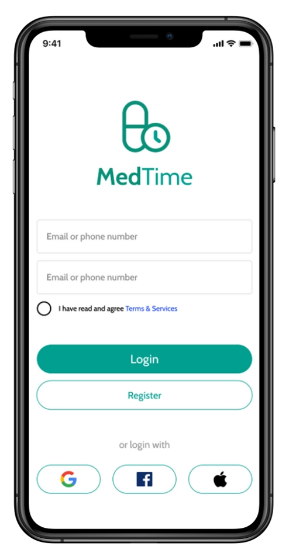
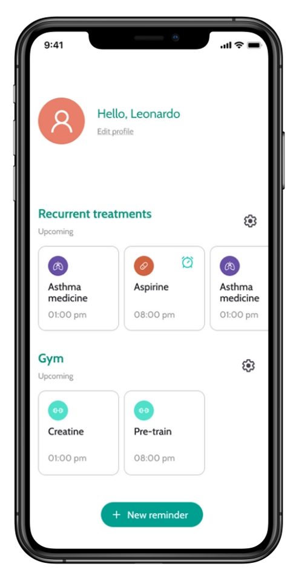
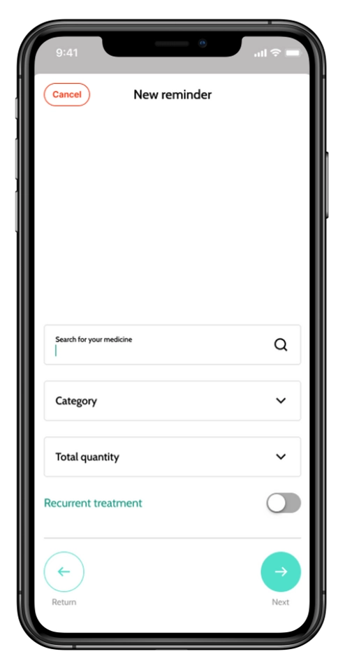
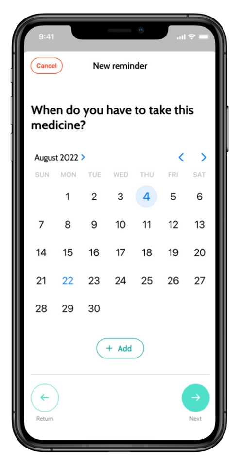
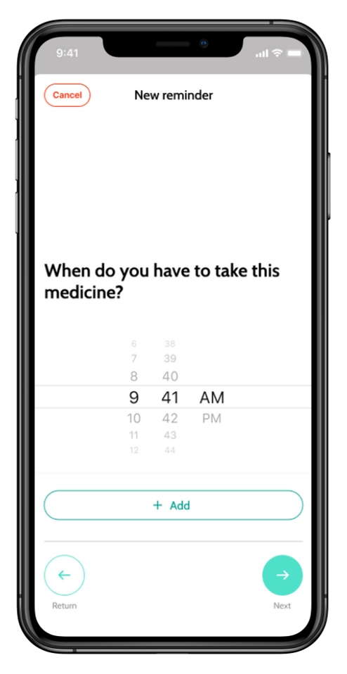
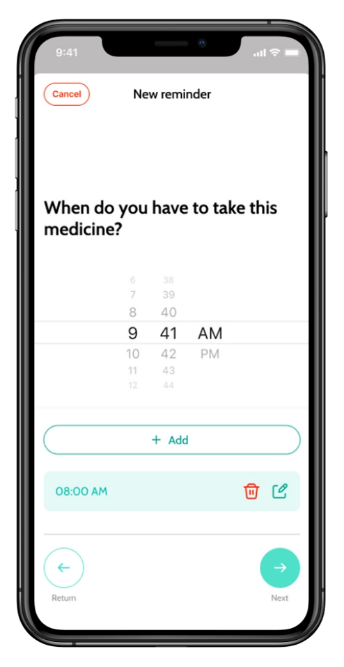
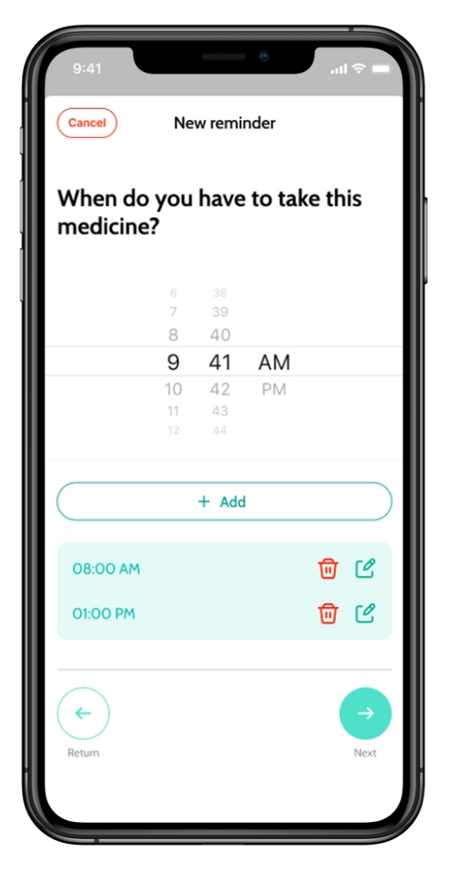
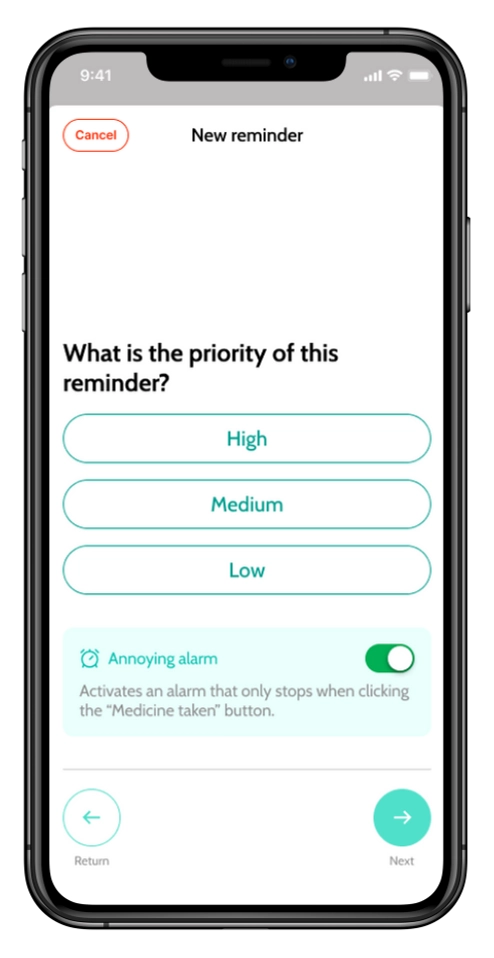
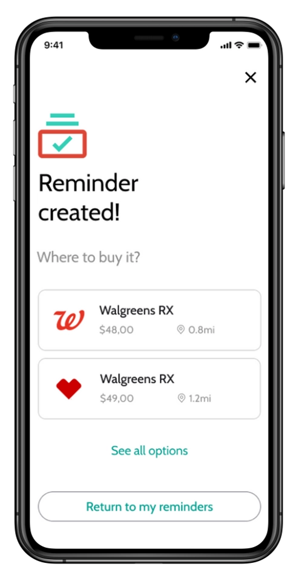
To optimize the Medtime app, I introduced two key improvements: a dedicated section for recurrent medications and customizable categories for better organization. These changes help users easily manage frequent doses and organize medicines according to their preferences.
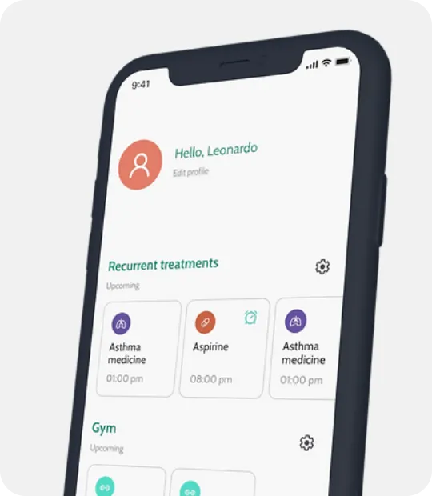
I added an "Add More" option under the time picker, making it easy for users to set multiple reminders for their medications. I also introduced a smart feature that suggests common usage patterns like "3 times per day," simplifying the process with pre-defined options that match prescribed dosages.
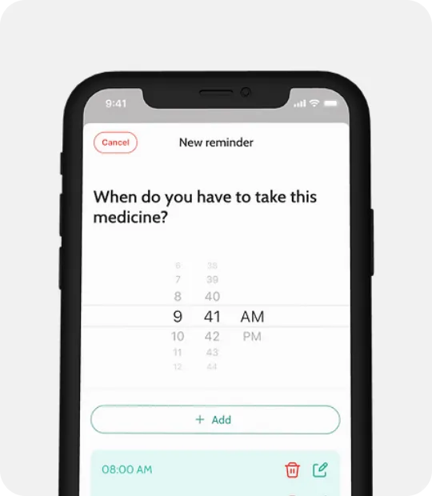
This new feature offers users smart recommendations for nearby pharmacies to purchase their prescribed medications, addressing the challenge of finding the right pharmacy at the best prices. By integrating this, Medtime becomes not just a medication management tool but also a valuable resource for informed healthcare decisions, ensuring a seamless and hassle-free experience.
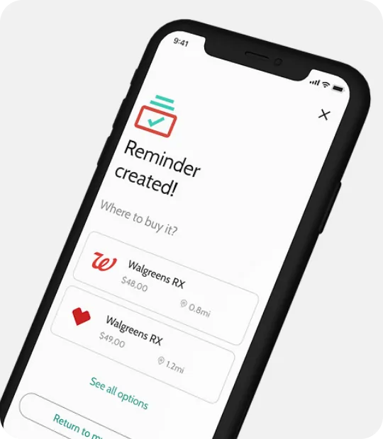
In conclusion, this redesign project showcases the fusion of technological innovation and user-centric design. By enhancing AI capabilities and simplifying the interface, we improved user engagement and accessibility. The streamlined design and simplified interactions create a compelling user experience, laying the foundation for continuous improvement and adaptability to evolving user needs.
Recognizing design as an evolving process, this project serves as a foundation. Continuous iteration and user feedback will drive further refinements to ensure sustained user satisfaction.
Throughout the development process, the primary focus has been on creating a user-friendly and intuitive experience for individuals like Alex and Sarah. By actively incorporating user feedback and insights, Medtime ensures that it caters to the unique needs and preferences of its users.
The core objective of Medtime is to simplify the complex process of medication management. With personalized alarms, dedicated sections, and customizable categories, the app streamlines medication routines, reducing the likelihood of missed doses and promoting better adherence to prescribed regimens.
The inclusion of smart recommendations, such as suggested usage patterns and nearby pharmacy suggestions, further enhances the user experience, making it easier for users to manage their medications efficiently and conveniently.
Ultimately, Medtime aims to empower users in taking charge of their health and well-being. By offering an all-in-one solution for medication management, the app seeks to alleviate the burden of scheduling and organizing medications, allowing users to focus on what matters most - their health and quality of life.